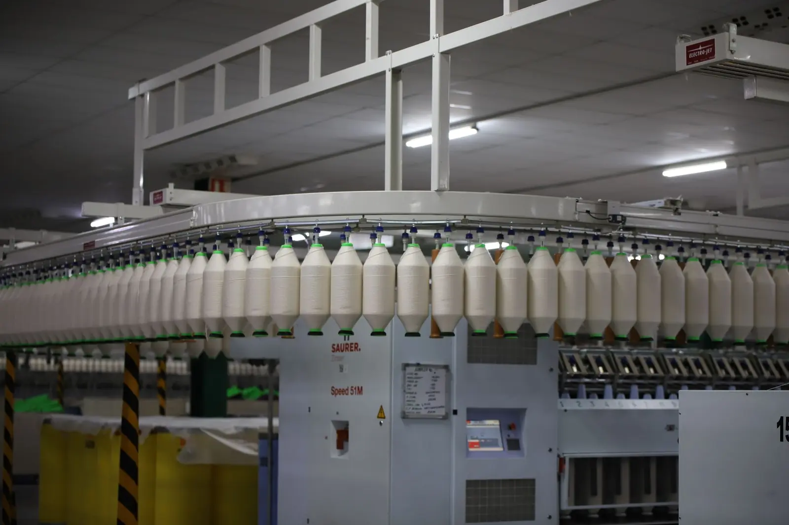

Spinning machinery · Lahore & Faisalabad
Spinning machinery, bought and sold since 1988.
We're a family firm in Manga Mandi, Lahore, with a machinery godown in Faisalabad. Mills come to us for used and new machinery, spare parts, yarn, cotton, and now and then a whole mill.
Why mills deal with M Tech
Since 1988
Started in Karachi with open-end spare parts.
Godown visits in Faisalabad
See the machine before you pay. Call first.
Straight answers on WhatsApp
Send a photo or a model number to 0332-4681423.
Nationwide delivery & installation on request
Parts go anywhere in Pakistan. Installation is extra.
What we do
Four things we know well.
Pick the one you need. Each page lists the machines or parts we handle and answers the questions mills usually ask us.

Textile Machinery
Used and new spinning machinery, from blowroom to Autoconer.
Read more
Spinning Spare Parts
Parts for every department of a mill, new and used.
Read more
Yarn & Cotton Trade
All kinds of yarn, plus local and imported cotton.
Read more
Mill Sale & Purchase
Whole mills and units, bought, sold or brokered.
Read moreMakes we buy, sell and find parts for
Rieter, Trützschler, Toyota, Murata, Schlafhorst, Savio, Zinser, Marzoli, Suessen, Saurer, LMW, Howa, Ohara, Crosrol, Platt, Volkmann, SSM, Hara Shokki, Jingwei, Vouk.
Brand names belong to their owners. We trade new and pre-owned machinery of these makes; we aren't their official agent.

Who you'll deal with
You talk to the owners.
Abdul Rasheed Gill learned spinning on the open-end floors of Karachi and started M Tech there in 1988. These days he runs it with his four sons. Soban looks after the godown, Sufian the office, and Numan and Moeen are usually out visiting mills.
So when you call about a machine, you get one of us, and we've usually seen it ourselves.
How cotton becomes yarn
From the first bale to the final cone.
The departments of a spinning mill, in order, with the makes we buy and sell most often for each one.
Blowroom
Bales to Clean tufts
Bales are opened, the cotton is plucked into small tufts, cleaned of trash and blended so every kilo runs the same.
Trützschler · Rieter blowroom lines
Carding
Tufts to Card sliver
The card separates the fibres one by one into a fine web, then gathers it into a soft rope called sliver.
Trützschler TC · Rieter C series
Draw frame
6 to 8 slivers to One even sliver
Several slivers are doubled and drafted together. Thick and thin places cancel out and the fibres lie straight.
Rieter RSB · Trützschler TD
Comber
Sliver to Combed sliver
Short fibres and neps are combed out. What's left makes finer, stronger, cleaner yarn.
Rieter E series · Marzoli
Simplex
Sliver to Roving
Sliver is drawn thinner and given a light twist so it can go onto bobbins for the ring frame.
Toyota FL · Zinser · Marzoli
Ring frame
Roving to Yarn
The final draft and twist. Thousands of spindles turn roving into yarn on small cops.
Zinser · Toyota RX · Marzoli · LMW
Autoconer
Cops to Cones
The clearer checks the yarn, cuts out faults and splices it, then winds it onto big cones ready to sell.
Murata · Schlafhorst · Savio
Open-end
Sliver to Yarn
Rotor spinning skips the simplex and ring frame and makes coarser yarn straight from sliver, fast.
Rieter R · Schlafhorst Autocoro
Spare parts
A machine stopped for one part?
Send us a photo of the old part, or its part number, with the make and model of the machine. We'll reply on WhatsApp with whether we have it and the price. Parts go anywhere in Pakistan.
Our promise
What dealing with us looks like.
We'll tell you what a machine is really worth, whether you're buying it or selling it.
Promise 01If we don't have a part, we say so straight away. Then we ask around our network.
Promise 02Godown visits are by appointment, so someone who knows the machine is there when you arrive.
Promise 03Terms are agreed face to face, and every deal is written down.
Promise 04
Looking for a machine, a part, or a buyer?
Tell us what you need. We answer on call and WhatsApp, and godown visits are by appointment.
